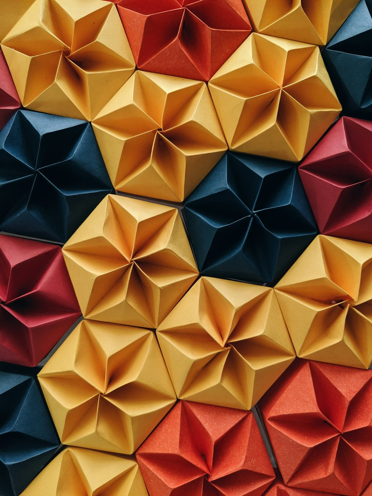
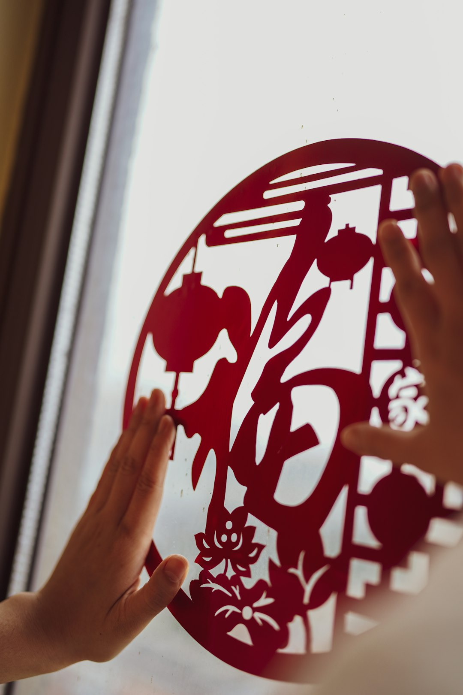

库淑兰
剪纸艺术大师
陕西旬邑人，中国民间剪纸艺术的杰出代表。她的作品色彩绚丽、构图饱满，被誉为"剪花娘子"。1996年被联合国教科文组织授予"民间工艺美术大师"称号。
将民间剪纸从传统窗花提升为独立的艺术形式，开创了彩贴剪纸的新风格。
致敬为纸艺传承做出卓越贡献的艺术家们
剪纸艺术大师
陕西旬邑人，中国民间剪纸艺术的杰出代表。她的作品色彩绚丽、构图饱满，被誉为"剪花娘子"。1996年被联合国教科文组织授予"民间工艺美术大师"称号。
将民间剪纸从传统窗花提升为独立的艺术形式，开创了彩贴剪纸的新风格。

蔚县剪纸代表人物
河北蔚县人，蔚县点彩剪纸的创始人之一。他将戏曲人物、花鸟走兽等题材融入剪纸创作，形成了独具特色的阴刻为主、阳刻为辅的剪纸风格。
奠定了蔚县剪纸的艺术基础，使阴刻点彩技法成为中国剪纸的重要流派。

当代剪纸艺术家
中央美术学院教授，中国当代实验艺术的先驱。他将传统民间剪纸语言融入当代艺术创作，代表作"小红人"系列在国际上引起广泛关注。
将剪纸从民间工艺推向当代艺术领域，为传统技艺开辟了全新的表达维度。

扬州剪纸传承人
江苏扬州人，扬州剪纸艺术的集大成者。作品线条清秀流畅、构图精巧雅致，尤以菊花剪纸闻名遐迩，被誉为"神剪"。
系统整理了扬州剪纸的技法体系，培养了一大批剪纸传承人，使扬州剪纸得以薪火相传。